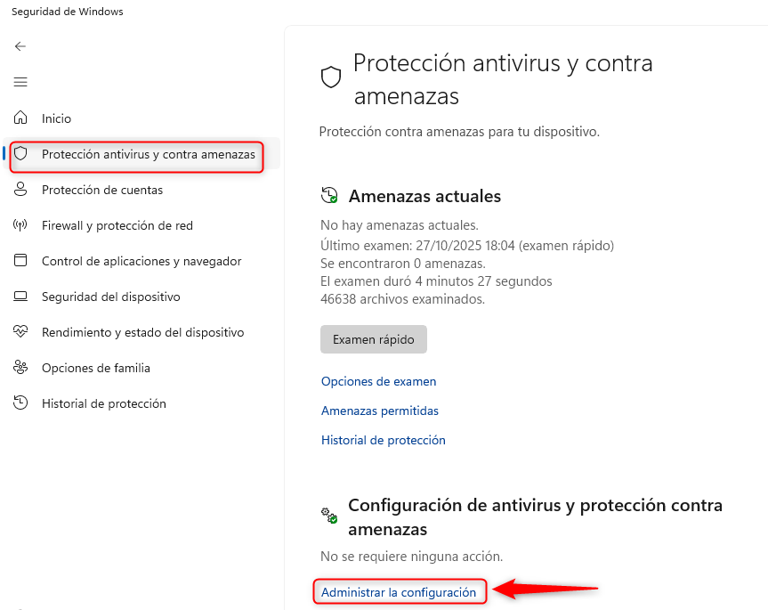
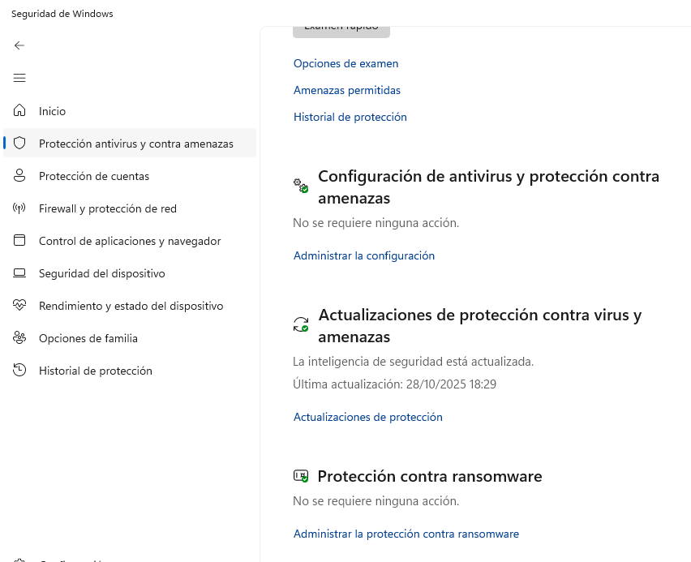

Crea carpeta temporal:
C:\SERVIDORES\xampp\
Asegúrate de que el usuario tiene control total sobre la carpeta (clic derecho → Propiedades → Seguridad → Editar → Control total).
.
| Servicio | Qué suele causar el problema | Síntoma |
|---|---|---|
| Apache (httpd.exe) | Firewall bloquea los puertos 80/8080/443/8443 | phpMyAdmin o localhost no cargan |
| MySQL/MariaDB (mysqld.exe) | Protección en tiempo real o “Controlled Folder Access” impide leer mysql\data o abrir puerto TCP |
MySQL arranca y se detiene solo |
| Proxy del aula | Intercepta o filtra localhost o 127.0.0.1 |
phpMyAdmin carga lento o no carga recursos |
Así evitarás que Defender escanee constantemente los ficheros de MySQL o Apache.
1️⃣ Abre Inicio → Seguridad de Windows → Protección antivirus y contra amenazas
2️⃣ Clic en Configuración de antivirus y amenazas → Administrar configuración

3️⃣ Baja hasta Exclusiones → Agregar o quitar exclusiones
4️⃣ Añade exclusiones de tipo Carpeta para las carpetas de XAMPP, por ejemplo, si está en C:\SERVIDORES\xampp:
C:\SERVIDORES\xampp\
C:\SERVIDORES\xampp\mysql\
C:\SERVIDORES\xampp\apache\
C:\SERVIDORES\xampp\htdocs\
5️⃣ Añade exclusiones de tipo Proceso (opcional pero recomendable):
httpd.exe
mysqld.exe
php.exe
xampp-control.exe
üí° Esto evita bloqueos del motor de base de datos o lentitud al abrir phpMyAdmin.
Si lo tienes activado (modo Controlled Folder Access), puede impedir que MySQL escriba en mysql\data.
1️⃣ En Protección antivirus y contra amenazas → Protección contra ransomware

2️⃣ Entra en Control de acceso a carpetas
3️⃣ Si está activado, pulsa Permitir una aplicación a través del control de acceso a carpetas
4️⃣ Agrega las siguientes rutas:
C:\SERVIDORES\xampp\mysql\bin\mysqld.exe
C:\SERVIDORES\xampp\apache\bin\httpd.exe
C:\SERVIDORES\xampp\php\php.exe
üí¨ Si prefieres no tocarlo, puedes desactivarlo mientras estás con xampp y reactivarlo despu√©s.
Para que puedan abrir los puertos localmente (aunque uses proxy del aula).
1️⃣ Abre Inicio → Windows Defender Firewall con seguridad avanzada
2️⃣ Clic en Reglas de entrada → Nueva regla
Tipo: Programa
Ruta:
C:\SERVIDORES\xampp\apache\bin\httpd.exeC:\SERVIDORES\xampp\mysql\bin\mysqld.exePermitir conexión → Todas las redes (dominio, privada, pública)
3️⃣ Repite en Reglas de salida.
✅ Apache y MySQL podrán escuchar en 127.0.0.1 y puerto 8080 / 3306 sin bloqueos.
Muchos centros usan proxies que pueden interferir con localhost.
localhost y 127.0.0.1 del proxy del sistema 1️⃣ Abre Panel de control → Opciones de Internet → Conexiones → Configuración de LAN
2️⃣ Si está marcada la opción “Usar un servidor proxy”, pulsa Avanzada
3️⃣ En la casilla “No usar proxy para direcciones que comiencen por”, añade:
localhost;127.0.0.1;*.local
4️⃣ Acepta y reinicia el navegador.
Esto asegura que las llamadas a
http://localhosto127.0.0.1no pasen por el proxy del centro, lo que mejora la velocidad al abrir phpMyAdmin o proyectos.
Abren la configuración de Windows, así que la exclusión anterior ya aplica.
En Firefox:
1️⃣ Menú ≡ → Configuración → General → Configuración de red
2️⃣ Marca Sin proxy o No usar proxy para: localhost, 127.0.0.1
Si no puedes conseguir que el servicio se inicie, tu primer paso debería ser comprobar tus registros de error. Esto puede indicarte la causa del problema.
Si sabes por qué se produce el problema, deberías ser capaz de resolverlo mucho más rápido que solucionarlo por prueba y error. El acceso a los registros se realiza a través de diferentes rutas, dependiendo del sistema operativo y de la versión. Afortunadamente, hay una manera sencilla de encontrar la ruta para su configuración.
Puedes acceder al registro de errores pulsando el botón Logs junto al botón Apache Config.
Para localizar tus registros de errores de PHP, abre el panel de control de XAMPP escribiendo http://localhost en la barra de direcciones de tu navegador. Allí, haz clic en PHPInfo en la parte superior de la pantalla:
A continuación, busca error_log. Esto revelará la ruta que debe introducir en tu barra de direcciones para ver el registro.
Normalmente el error más común es que el puerto está ocupado por otro servicio. Si haces clic en el botón Netstat en el panel de control de XAMPP, debería mostrarte todos los puertos que están actualmente en uso, y qué aplicaciones los están utilizando.
Los podemos ordenar pulsando en el encabezado de la columna Port. Si ves que el puerto 80 está ocupado o el 443, es probable que Apache no pueda iniciarse.
En el caso de la imagen está ocupado porque hemos arrancado nuestro propio servidor Apache de Xampp. No debe aparecer ocupado si no hemos arrancado ningún servidor.
Si sabes qué programa es el problema y puedes desbloquear el puerto eliminando la aplicación que estorba, esto resolverá el problema inmediatamente.
Si no puedes conseguir que el servicio se inicie, tu primer paso debería ser comprobar tus registros de error. Esto puede indicarte la causa del problema.
Si sabes por qué se produce el problema, deberías ser capaz de resolverlo mucho más rápido que solucionarlo por prueba y error. El acceso a los registros se realiza a través de diferentes rutas, dependiendo del sistema operativo y de la versión. Afortunadamente, hay una manera sencilla de encontrar la ruta para su configuración.
Puedes acceder al registro de errores pulsando el botón Logs junto al botón Apache Config.
Para localizar tus registros de errores de PHP, abre el panel de control de XAMPP escribiendo http://localhost en la barra de direcciones de tu navegador. Allí, haz clic en PHPInfo en la parte superior de la pantalla:
A continuación, busca error_log. Esto revelará la ruta que debe introducir en tu barra de direcciones para ver el registro.
Normalmente el error más común es que el puerto está ocupado por otro servicio. Si haces clic en el botón Netstat en el panel de control de XAMPP, debería mostrarte todos los puertos que están actualmente en uso, y qué aplicaciones los están utilizando.
Los podemos ordenar pulsando en el encabezado de la columna Port. Si ves que el puerto 80 está ocupado o el 443, es probable que Apache no pueda iniciarse.
En el caso de la imagen está ocupado porque hemos arrancado nuestro propio servidor Apache de Xampp. No debe aparecer ocupado si no hemos arrancado ningún servidor.
Si sabes qué programa es el problema y puedes desbloquear el puerto eliminando la aplicación que estorba, esto resolverá el problema inmediatamente.
Puertos ocupados
"Soluciones"
xampp_portable\apache_stop.bat.xampp_portable\mysql_stop.bat.xampp\mysql\data\mysql_error.log).xampp\apache\logs\error.log).Puedes comprobar qué procesos usan el puerto 3306 o 3307 (el que este configurado) con este comando en la consola de Windows:
netstat -ano | findstr 3306
Si ves otro programa ocupándolo, tendrás que detenerlo o cambiar su puerto.
Tablas dañadas o caché corrupta en MySQL
Si alguna base de datos tiene tablas corruptas (por ejemplo, en mysql o phpmyadmin), el servicio puede quedarse colgado o reiniciarse solo.
"Soluciones"
Exceso de registros en los logs de MySQL o PHP
Archivos de log grandes o con errores constantes ralentizan mucho el arranque.
"Soluciones paso a paso"
xampp\mysql\data\ y borra los archivos que terminen en .err o .log.xampp\php\logs\ y borra los archivos que terminen en .log.Poca memoria disponible
"Soluciones"
my.ini y busca las secciones:[mysqld]
innodb_buffer_pool_size=256M
wait_timeout=28800
Puedes aumentar innodb_buffer_pool_size a 512M o 1G si tu equipo tiene RAM suficiente.
Importante
Antes de realizar cualquier cambio en los ficheros de configuración de XAMPP, es recomendable hacer una copia de seguridad de los ficheros originales para poder restaurarlos en caso de que algo salga mal. Y realizar estos cambios con XAMPP cerrado, y antes de cualquier instalación o creación de bases de datos.
Por defecto, XAMPP usa los puertos 80 y 3306. En muchos ordenadores estos puertos están ocupados (Skype, IIS, MySQL del sistema, ...).
Si deseas cambiar los puertos por defecto de Apache y MySQL, debes seguir estos pasos:
Abre xampp\apache\conf\httpd.conf
Busca la línea:
Listen 80
y cámbiala por:
Listen 8080
Busca:
ServerName localhost:80
y cámbiala por:
ServerName localhost:8080
En xampp\apache\conf\extra\httpd-ssl.conf
Cambia:
Listen 443
por:
Listen 8443
Y:
<VirtualHost _default_:443>
por:
<VirtualHost _default_:8443>
Guarda y cierra.
Abre xampp\mysql\bin\my.ini
Busca:
port=3306
y cámbialo por:
port=3307
Ajustes en phpMyAdmin si se ha cambiado el puerto
xampp\phpMyAdmin\config.inc.php<?php
$i = 0;
$i++;
$cfg['Servers'][$i]['host'] = '127.0.0.1';
$cfg['Servers'][$i]['port'] = '3307';
$cfg['Servers'][$i]['user'] = 'root';
$cfg['Servers'][$i]['password'] = '';
$cfg['Servers'][$i]['auth_type'] = 'config';
?>
Abre xampp\mysql\bin\my.ini y añade al final:
[mysqld]
skip-name-resolve
bind-address=127.0.0.1
innodb_buffer_pool_size=64M
innodb_log_file_size=32M
character-set-server=utf8mb4
collation-server=utf8mb4_unicode_ci
üí° Esto mejora velocidad, evita esperas por DNS y asegura compatibilidad UTF-8.